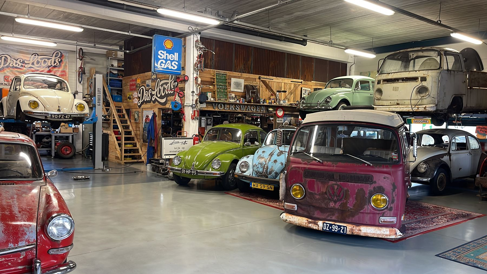
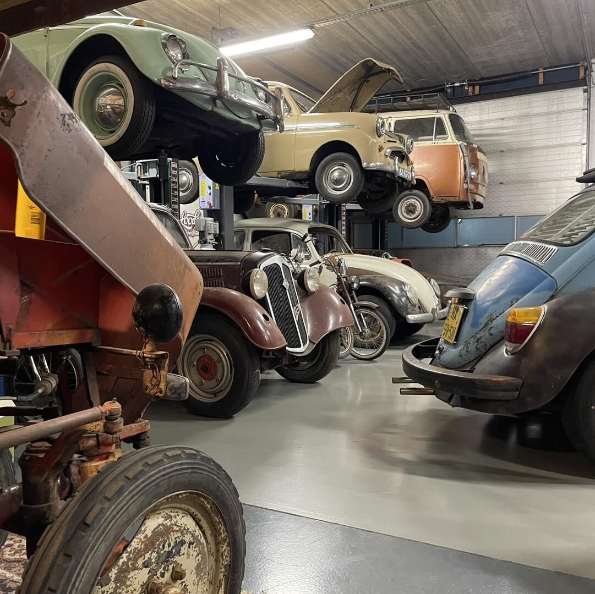
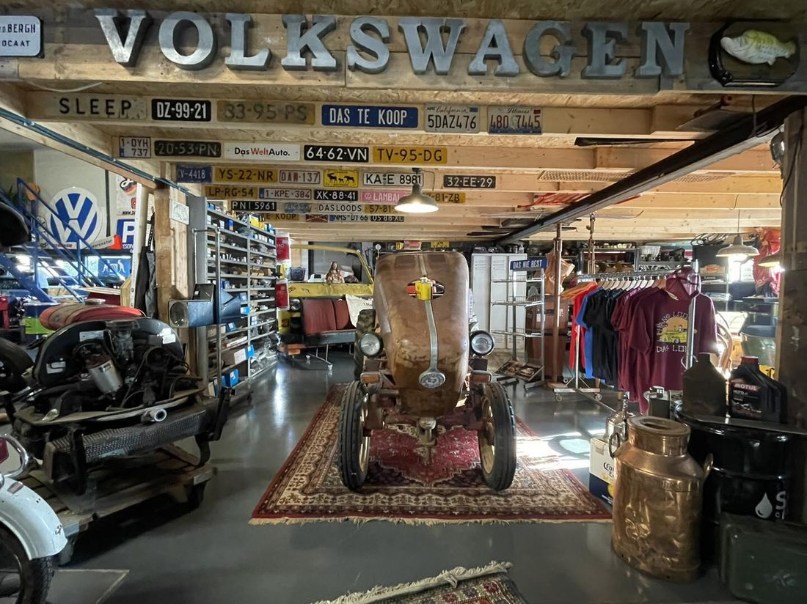
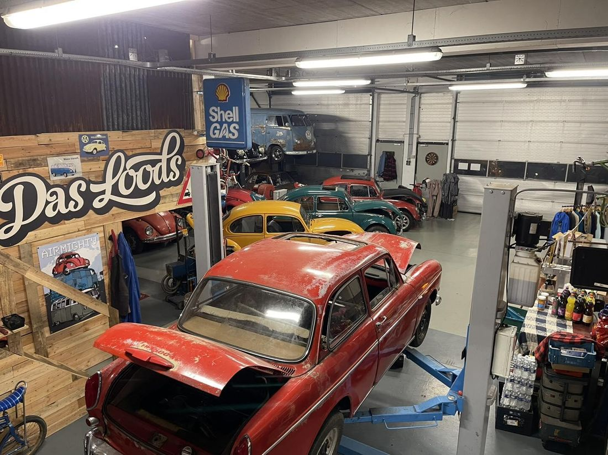
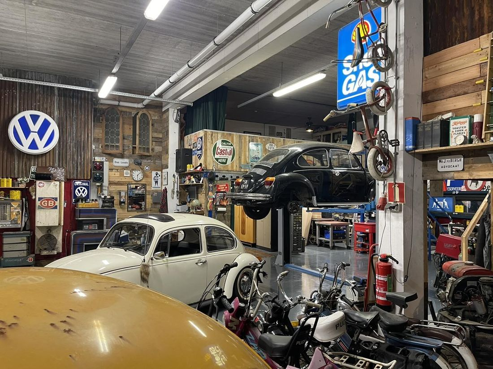
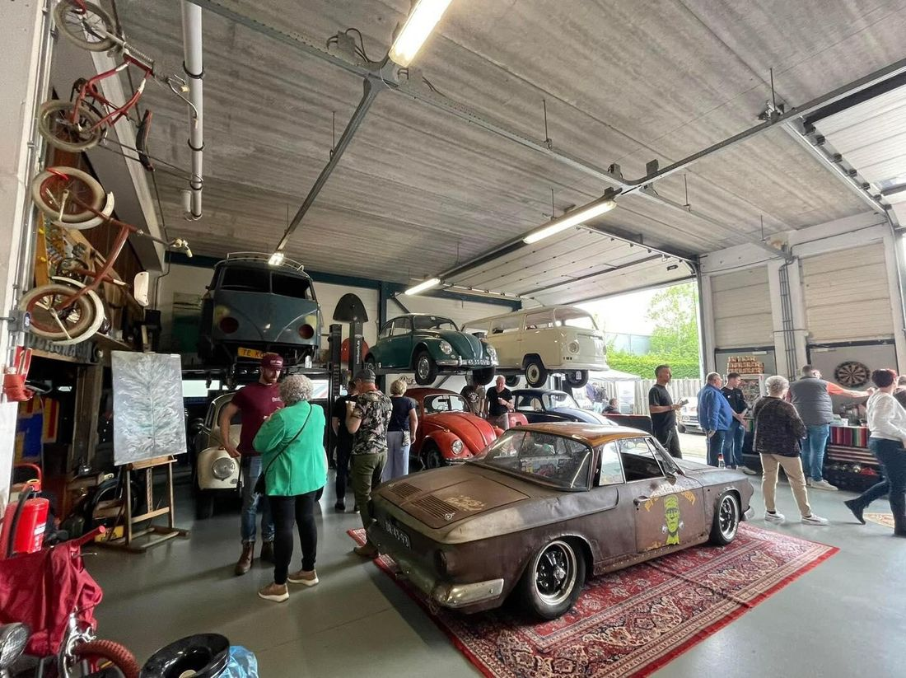

De parel van het zuiden voor klassieke Volkswagens
Wat begon als hobby, is uitgegroeid tot een mini-museum vol luchtgekoelde liefdes. We kopen en verkopen klassieke Volkswagens in elke staat en leveren de onderdelen erbij, nieuw en tweedehands.
Nu te koop
Eerlijk beschreven, ook de plekken waar de jaren aan te zien zijn. Klik op een auto voor het hele verhaal.

Gezocht: klassieke Volkswagens
We zijn altijd op zoek naar Volkswagen oldtimers en youngtimers. Van Kever, Kübel, T1, T2, T3 en Type 3 tot Golf en Polo. Een project, rijdend of een sloper: bied alles gerust aan.

Alle onderdelen, nieuw en tweedehands
Bij ons bestel je makkelijk en snel alles wat je klassieker nodig heeft: van remmen en motoronderdelen tot carrosseriepanelen en rubbers. Gloednieuw of tweedehands.
Een kijkje in de loods



Van hobby naar mini-museum
Das Loods begon als hobby. Inmiddels staat de loods vol luchtgekoelde Volkswagens, oude borden en onderdelen. Elk jaar zetten we de deuren open voor ons open huis, dit jaar op 17 mei.